Modifying cylinders, cones, spheres, and tori
You can use the steering wheel and edit handles to modify cylinders, cones, spheres, and tori.
Modifying cones
You can use the steering wheel to move faces on a cone.

You can edit the angle of the cone by selecting the edit handle on the cone
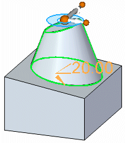
and typing in a new value for the angle.
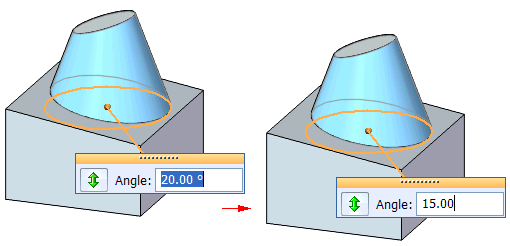
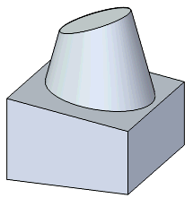
You can use the Angle icon to control the end of the cone you want to lock.
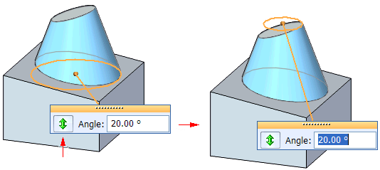
Modifying cylinders
You can use the steering wheel to change the length of a cylinder.
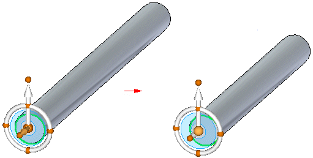
You can edit the diameter of cylinders by selecting the edit handle on the cylinder
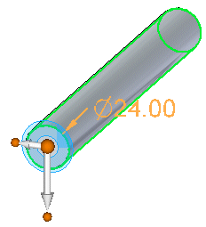
and typing in a new diameter for the cylinder.
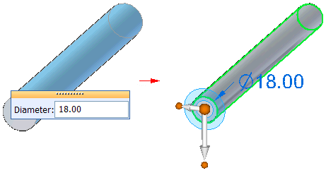
Modifying spheres
You can use the steering wheel to move faces on a sphere.
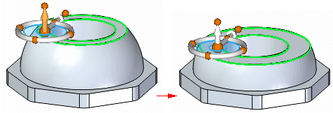
You can edit the diameter of spheres by selecting the edit handle on the sphere
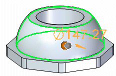
and typing in a new diameter for the sphere.
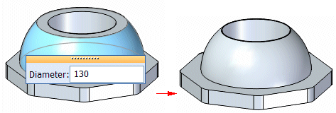
Modifying tori
You can use the steering wheel to move faces on a torus.
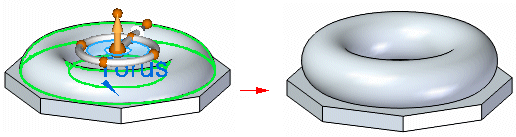
You can edit the diameters of a torus by selecting the edit handle on the sphere
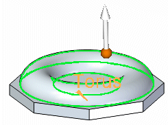
and typing in new diameters for the torus.
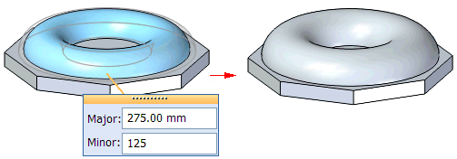